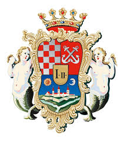
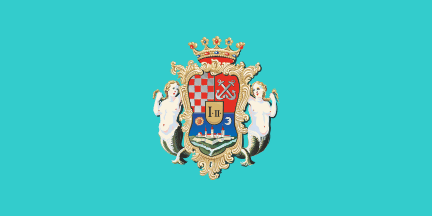
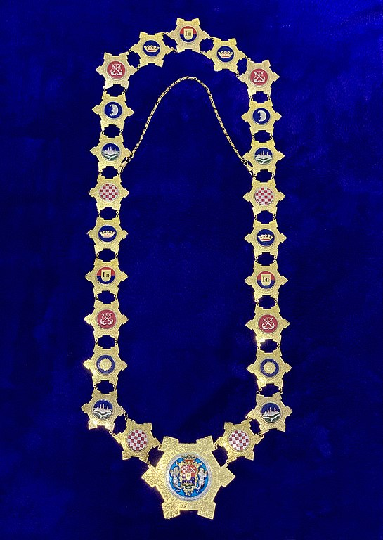

Općenito
Karlovac, grad u Pokuplju, 56 km jugozapadno od Zagreba, sjedište Karlovačke županije; 41 869 st. (2021). Uz mnogobrojne parkove i zelene površine, zbog čega nosi epitet "grada parkova", osobitost Karlovca su čak četiri rijeke koje prolaze kroz grad − Korana, Kupa, Dobra i Mrežnica po kojima je poznat kao grad na četiri rijeke.
Službena obilježja grada Karlovca su grb, zastava, povijesni pečat i lanac gradonačelnika.
Grb
Zastava
Lanac
Grad na četiri rijeke
Karlovac je mjesto na kojem možete zaustaviti vrijeme i otkriti kako živi grad na četiri rijeke u četiri godišnja doba. Mi ga volimo oduvijek, a na vama je da zavolite svježe rascvjetane boje karlovačkih proljeća, ljetne modro-zelene boje rijeka, jesenje šuškavo smeđe parkova i kristalno bijele boje tihih gradskih zima.
Bogata ljepota
U bilo koje godišnje doba, vrata Karlovca otvorena su za vas i otkrivaju jedinstvene lokacije na kojima se doživljaji pretvaraju u uspomene što traju još dugo nakon povratka. Tu su Aquatika – jedinstveni slatkovodni akvarij u kojem možete zaviriti ispod površine rijeka i vidjeti zašto je Hrvatska najbogatija zemlja Europe kad je riječ o riječnoj flori i fauni, i Muzej Domovinskog rata na Turnju s posebnom zbirkom naoružanja na otvorenome, kao vječnim simbolom pobjede Karlovčana u svim ratovima ovih prostora. Tu je i Stari grad Dubovac, grad koji je postojao prije grada, ali i jedinstvena Žitna lađa kao uspomena na zlatno doba Karlovca.
Knjiga koja se otkriva svakim korakom
Baš kao što zanimljiv sadržaj leži između korica knjige, tako se i sadržaj grada otkriva tek kad uđete u njega. Kako čitati grad? Karlovac se čita svakim korakom, pregledavajući retke ove neobične knjige u kojoj se nađete poput Alise u zemlji čudesa, postajući na trenutak glavni lik. Grad se čita i između redova, kroz skrivene kutke izostavljene u turističkim brošurama.
Svakodnevni Karlovac
Karlovčanima je njihova svakodnevica uobičajena i ponekad dosadna. Red poslovnih obaveza, kava u obližnjem kafiću u parku ili unutar zidina Starog grada, ljetno popodne provedeno na rijekama, večernji izlazak na koncert, jutarnja misa u baroknoj crkvi, zimsko sanjkanje u šancu, odlazak na predstavu u kazalište Zorin dom, subotnja kupovina na gradskoj tržnici i jabuke... mmm... netom ubrane mirisne jabuke iz vrta. Naša svakodnevica vama će biti vrhunski doživljaj! Vjerujte! Otvorite knjigu Karlovca koju imate pred očima i postanite dio nje. Okrenite prvu stranicu ili krenite od sredine knjige, dodajte što želite, uključite nove likove, snimite film. Uživajte u Karlovcu!

Skriveni pogledi
Ako imate osjećaj da vas netko prati, ne, nisu to kamere! Najvjerojatnije vas promatraju oči usnule sove iz krošnje lipe, golub iz duplje stare platane ili vjeverica na Crnoj promenadi.
Magični trokut
Početna točka otkrivanja grada počinje prvim korakom. Kad krenete u potragu za skrivenim kutcima Karlovca, možete započeti s magičnim trokutom na ulazu u Zvijezdu, omeđen nekadašnjom Gradskom kavanom, a današnjim Papa’s barom, spomenikom žabi i Paviljonom Katzler. Tri simbola grada iz različitih vremenskih dimenzija. Jeste li pročitali „spomenik žabi“? Da, imamo spomenik žabi.
Ostali zanimljivi naslovi
Riječna luka na obali Kupe na Gazi podsjetnik je slavne prošlosti dok je Karlovac bio lučki grad.
Arheološki ostaci kapele svetog Josipa na Strossmayerovom trgu odvest će vas u još davniju povijest.
Križ na zvoniku crkve Presvetog Trojstva služi kao barometar i okrenut će se okomito na Radićevu ulicu kao nagovještaj promjene vremena.
Mistični prolazi u rubovima šančeva pradavni su tuneli koji vode sve do bunara u dvorištu starog grada Dubovca.
Zvijezda: Svaka kuća jedinstvena, mnoge s karakterističnim prozorima na krovištima u obliku malih kućica. Između kuća otkrit ćete uske prolaze koje Karlovčani nazivaju gasice, korištene za sprječavanje širenja požara.
Kineska četvrt: Možda ćete se naći na poznatoj filmskoj sceni, znak da ste u dijelu grada poznatom kao Kineska četvrt.
Najstariji park Karlovca: Uz Veleučilište, na uzvisini iznad zadnjeg sačuvanog bedema, osjećat ćete se kao pobjednik.